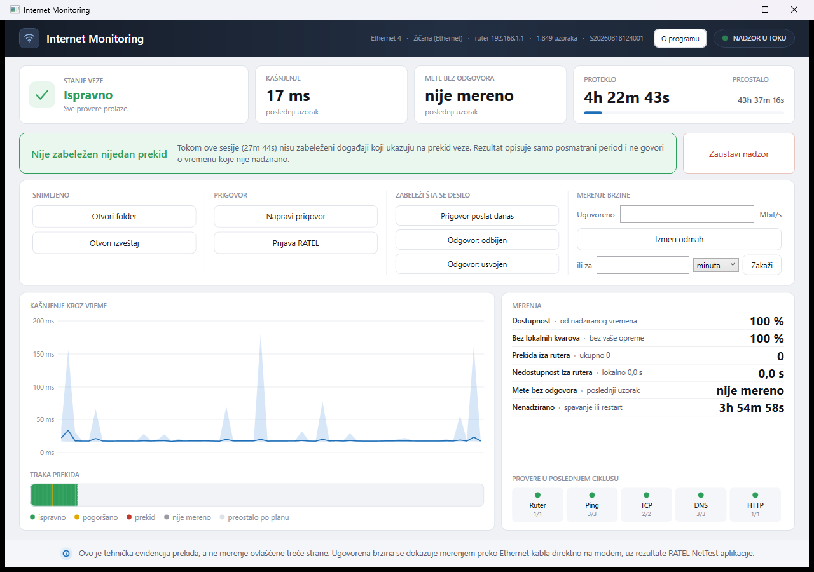
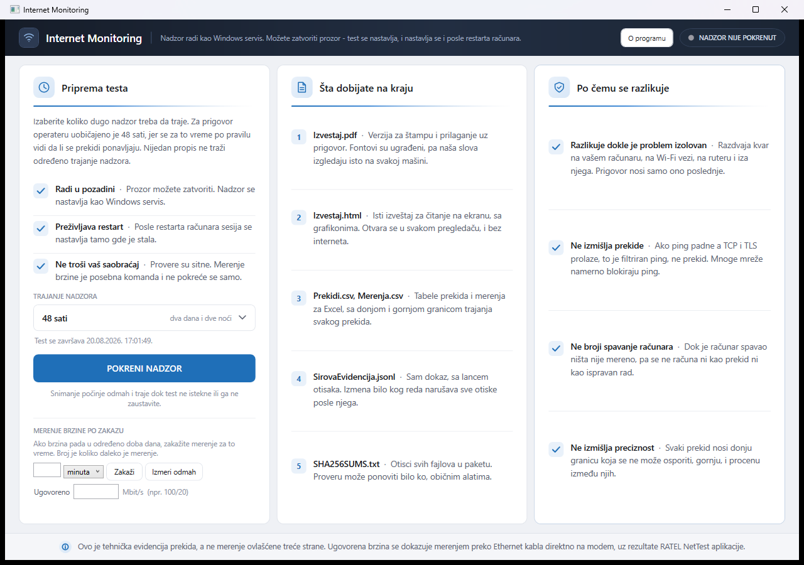

Forenzički alat koji beleži prekide i kvalitet internet veze i stvara kriptografski zapečaćenu dokumentaciju za prigovor operateru i regulatoru (RATEL). Radi 100% lokalno.
Program stalno ispituje lokalni ruter, spoljne mete, DNS i HTTP. Iz razlike između odgovora nepogrešivo izoluje domen problema — jedini dokaz koji operater ne može odbiti sa „proverite svoj Wi-Fi".

Razdvaja kvar na računaru, na Wi-Fi vezi, na ruteru i iza njega. Prigovor nosi isključivo ono van vaše kuće — bez paušalnih tvrdnji koje operater može oboriti.
Ako ICMP ping padne, a TCP i TLS prolaze, reč je o filtriranom protokolu, a ne o prekidu veze. Program višeslojnim proverama eliminiše lažne uzbune.
Dok je računar bio u stanju hibernacije ili spavanja (Sleep/Suspend), ništa nije mereno. Taj period se forenzički odvaja i nikada ne računa kao prekid mreže.
Svaki zabeleženi prekid nosi neospornu donju granicu trajanja, gornju granicu i procenu. Nema nagađanja niti proizvoljnih brojeva.
Kad sesija istekne, program sam generiše i kriptografski potpisuje ceo paket: izveštaj za štampu i regulatora, tabele merenja, sirovu evidenciju i zvanični RFC 3161 vremenski žig.

Kanonska projekcija dokaza usklađena sa RATEL pravilnikom i procedurom za prigovore operaterima.
Kriptografski inventar svih fajlova kanonizovan po RFC 8785 i potpisan ključem iz TPM čipa.
Zvanični vremenski žig sertifikovanog autoriteta koji trećim licima nepobitno dokazuje vreme merenja.
Kopija za javno deljenje sa maskiranim ličnim podacima (MAC, IP, SSID) i dokazanim poreklom do originala.
Za dvodnevni nadzor koji preživljava restart računara preporučuje se instalater sa servisom. Za brzu jednokratnu proveru dostupan je portabl program bez instalacije.
| Paket | Platforma | Namena | Preuzimanje |
|---|---|---|---|
| Instalater + Servis (Preporučeno) InternetEvidenceMonitor-3.0.0-rc.1-Setup.exe | Windows x64 | Instalacija | Preuzmi |
| Portabl Program (x64) InternetEvidenceMonitor-3.0.0-rc.1-win-x64.exe | Windows x64 | Portabl | Preuzmi |
| Portabl Program (ARM64) InternetEvidenceMonitor-3.0.0-rc.1-win-arm64.exe | Windows ARM64 | Snapdragon | Preuzmi |
| Forenzički Verifikator (CLI) iem-verifier-3.0.0-rc.1-win-x64.exe | Windows x64 | Offline Provera | Preuzmi |
| Konzolni Motor (CLI) iem-3.0.0-rc.1-win-x64.exe | Windows x64 | Automatizacija | Preuzmi |
Sve operacije se mogu obaviti kroz terminal: pokretanje u pozadini, merenje ugovorene brzine i offline verifikacija tuđih paketa.
Sva izdanja su potpisana Authenticode digitalnim potpisom sa SHA-256 algoritmom:
# Provera digitalnog potpisa instalatera Get-AuthenticodeSignature .\InternetEvidenceMonitor-3.0.0-rc.1-Setup.exe # Provera SHA-256 heša Get-FileHash .\InternetEvidenceMonitor-3.0.0-rc.1-win-x64.exe -Algorithm SHA256
Pokrenite aplikaciju kao administrator radi uvida u mrežne rute i Wi-Fi sloj:
# Pokretanje sa administratorskim pravima
Start-Process .\InternetEvidenceMonitor-3.0.0-rc.1-win-x64.exe -Verb RunAs
Konzolni motor iem.exe radi samostalno bez grafičkog interfejsa:
# 48 sati kontinualnog nadzora u folder C:\Dokazi .\iem.exe -t 48h -o C:\Dokazi # Merenje brzine uz profil 100/20 Mbps .\iem.exe --brzina 100/20
Nezavisni verifikator proverava manifest, potpis i RFC 3161 TSA vremenski žig:
# Provera integriteta bilo koje sesije
.\iem-verifier.exe C:\Dokazi\Sesija_20260819_011432
Svaka promena koja utiče na dokazni integritet dokumentuje se javno.
Kompletno zatvoren lanac dokaza od sirovih sondi do regulatornog izveštaja (RATEL) i redigovanog paketa za bezbedno deljenje.
Dugme za zaustavljanje nudi opcije izvoza, uklonjeni GPU efekti, a prozor je fiksiran na 1280 × 900 radi potpune stabilnosti.
Nadzor, kriptografski potpis i izveštaj su nezavisni od platforme.
x64 i ARM64, od Windows 10 naviše. Instalater sa servisom ili portabl fajl.
Avalonia GUI, Unix domain socket IPC i systemd servis.
Isto merno jezgro; interfejs i pristup CoreWLAN sloju.
Nadzor mobilne i kućne mreže sa specifičnim profilima.
Ceo projekat počiva na pravilu: „nisam mogao da proverim" nikada ne postaje „proverio sam i u redu je".
Za merenje maksimalne trenutne brzine RATEL predviđa NetTest. IEM pruža ključnu dopunu: višednevni neprekidni zapis prekida, zagušenja i kašnjenja pod opterećenjem koji operater ne može osporiti.
Manifest sesije se kanonizuje (RFC 8785) i potpisuje ključem iz TPM čipa, dok nezavisni RFC 3161 TSA autoritet overava tačno vreme merenja za nespornu proveru pred sudom ili regulatorom.
Program precizno prati rokove iz Zakona o elektronskim komunikacijama i RATEL pravilnika. Kada podaci nisu dovoljni za jedinstven zaključak, sistem pošteno beleži da rok nije utvrđen.
Za javno deljenje na forumima, IEM jednim klikom stvara redigovani derivat sa maskiranim IP, MAC i SSID podacima, uz matematički overeno poreklo do originalnog manifesta.